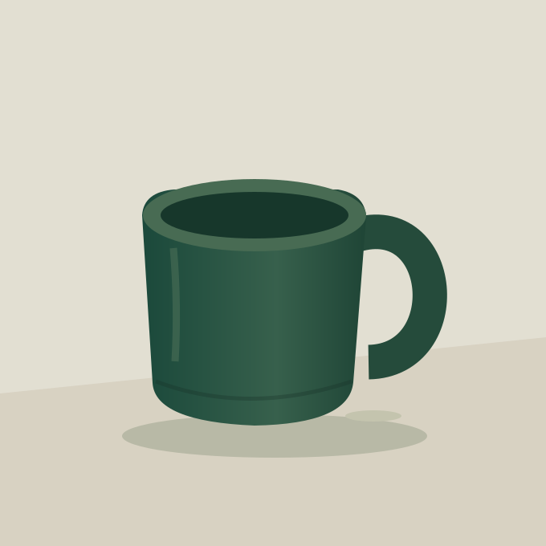
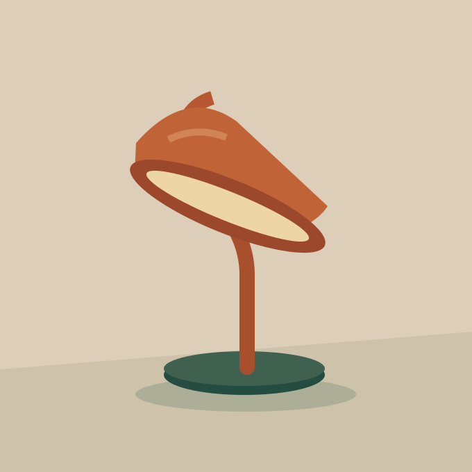
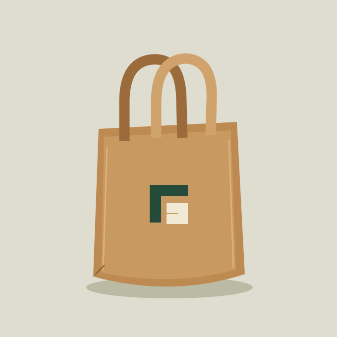
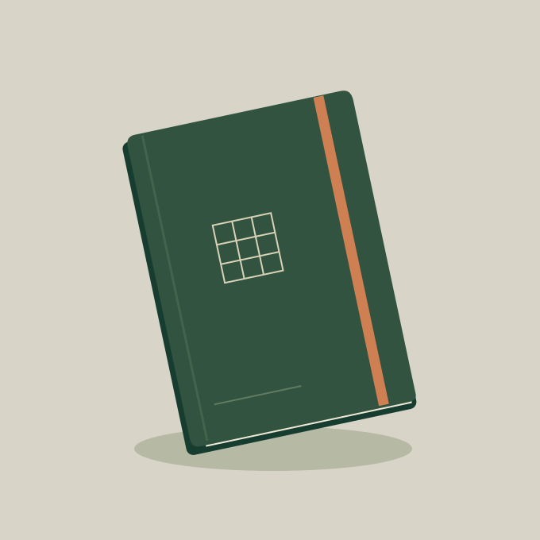

Give it room
Leave clear space of at least one quarter of the mark's height around the signature. Avoid placing text or product detail against its edges.
An editorial visual system for a fictional everyday-objects shop. A warm palette, a compact geometric mark and clear product presentation connect the identity to a working WordPress theme.
The original mark combines a cropped canvas corner with an inset square. The open form suggests composition and structure; the rounded field adds warmth. It is a design exercise, not a claim of trademark registration.
Leave clear space of at least one quarter of the mark's height around the signature. Avoid placing text or product detail against its edges.
Use the supplied SVG at its natural square ratio. Do not stretch, add a shadow or change the relationship between the two internal shapes.
Place the mark on cream, white or forest. At small sizes, use the symbol alone and retain a minimum rendered height of 24 CSS pixels.
Forest provides structure, cream provides space and terracotta provides a small point of energy. Accent orange belongs in illustrations and decorative elements; the darker orange supports readable links and labels.
#173B32
Primary actions, deep fields and strong structure.
#F5F1E9
Main canvas and reversed text on forest.
#D3673C
Illustration, brand mark and decorative accents.
#202E27
Headings and primary body text.
#5D675E
Supporting copy and secondary information.
#A24327
Text accents and focus indicators on paper.
Functional pairings: ink on paper, quiet green on paper, paper on forest and burnt orange on paper.
Text must remain readable without colour alone. Category choices also change shape and pressed state; disclosure controls include a visible symbol and native expanded state. Complete accessibility conformance still requires a broader audit.
Everyday,
considered.
A useful object needs room to be understood. The interface gives product names, prices and descriptions a consistent place.
The wide layout pairs an editorial introduction with a still life. Products use three columns above 800 pixels, two at 800 pixels and below, then one at 540 pixels and below. Content remains in reading order as it stacks.
A shared content width and aligned headings connect the hero, catalogue, story and theme notes. The desktop maximum is 1,320 CSS pixels.
Selected spacing values include 20, 28, 40, 64 and 88 pixels. Compact labels sit close to the content they describe; section changes get more space.
Long product labels wrap, cards become one column and the menu becomes an explicit toggle. Avoid fixed content heights that could clip translated or enlarged text.
The product artwork is composed from original vector geometry, local gradients and a restrained palette. It shows form without implying real manufacturing specifications, product certification or purchasing availability.




Every SVG includes Dhruba Poudel as its internal creator. Original code, design and bundled artwork are GPL-2.0-or-later; WordPress and WooCommerce retain their own licences and trademarks.
Links remain present without JavaScript. The enhanced small-screen menu exposes its expanded state and can be closed with Escape, returning focus to its toggle.
The sample catalogue uses HTML details and summary. Filters announce the visible count and keep the selected category's pressed state explicit.
A subtle image hover is decorative. A reduced-motion preference removes the transform transition and smooth scrolling.
A fictional brand and an original implementation study.This guide describes the identity and theme components. It does not claim client adoption, measured commercial results, trademark registration, WordPress directory acceptance or complete accessibility certification.